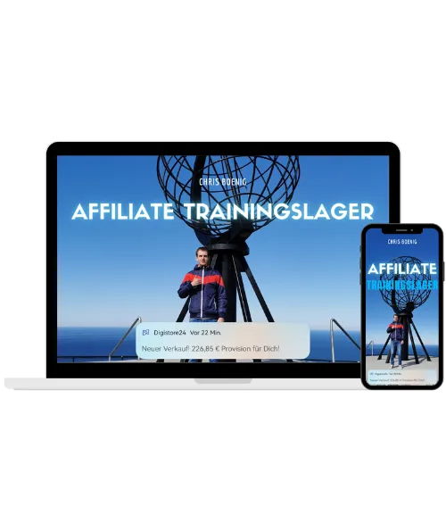

Der Kunden Magnet für Freelancer und VAs
Produktprofil · Marktplatz-Daten 2026-10-10 · Verkaufsseiten-Recherche 2026-10-10 · Kategorien: Email Marketing, Online Marketing & E-Business
- Der Kunden Magnet für Freelancer und VAs ist ein/e E-Book in Email Marketing und Online Marketing & E-Business, vertrieben über den Digistore24-Marktplatz von Anbieter freelancerkitools, gelistet seit 2026-06-15.
- Listenpreis $9.42; Digistore24 meldet — Checkout-Konversion, — Stornierungsquote und 50 % Affiliate-Provision.
- Verdienst pro Verkauf (Affiliate): $4.72 (Anbieter-seitige Statistik, keine Prognose).
Interesse an Der Kunden Magnet für Freelancer und VAs? Aktueller Preis, Boni und Garantiebedingungen finden Sie auf der offiziellen Seite des Anbieters:
Offizielle Verkaufsseite ansehen
Affiliate-Link (Werbung) — wir verdienen ggf. eine Provision, ohne Mehrkosten für Sie.
Marktplatz-Daten
| Produkttyp | E-Book |
|---|---|
| Preis | $9.42 (Single payment) |
| Affiliate-Provision | 50 % |
| Garantie/Rückgabe | Laut Verkaufsseite des Anbieters — vor dem Kauf auf der offiziellen Seite prüfen |
| Anbieter | freelancerkitools (gelistet seit 2026-06-15) |
| Marktplatz-Statistiken* | Checkout-Konversion — · Stornoquote — · Verdienst/Verkauf $4.72 |
* Anbieter-seitige Statistiken von Digistore24; sie hängen von der Traffic-Qualität ab und sind keine Prognose.
Marktplatz-Beschreibung des Anbieters
„Der Kunden-Magnet“ ist ein kompaktes KI-Prompt-System für Freelancer, Virtuelle Assistenten und digitale Dienstleister, die ihre Kundengewinnung, Angebotsformulierung und Einwandbehandlung professioneller aufbauen möchten. Das Produkt enthält sofort einsetzbare Prompts für ChatGPT und Claude und hilft Nutzern dabei, drei zentrale Business-Probleme zu lösen: bessere Erstkontakt-Nachrichten ohne Sp…
Von der Verkaufsseite des Anbieters
Seitentitel: Schluss mit Ghosting! | Der Kunden-Magnet für VAs & Freelancer
Meta-Beschreibung: Kunden gewinnen als VA: Der Kunden-Magnet liefert Dir 3 sofort nutzbare KI-Prompt-Module für Erstkontakt, Angebote und Einwandbehandlung.
Hauptüberschrift
kunden-magnet
Schneller zu professionellen Akquise-Texten – mit 3 klaren KI-Prompt-Modulen
Abschnitts-Überschriften
- Der Kunden-Magnet
- Wenn Akquise sich schwer anfühlt …
- 3 Prompt-Module für wichtige Kundengewinnungs-Situationen
- So arbeitet ein Prompt-Modul
- Du erhältst sofort nach dem Kauf:
- Starte jetzt für 9 € mit professionelleren Akquise-Texten
- Noch unsicher?
- Sichere Dir jetzt den Kunden-Magneten
Einstiegstext
Der Kunden-Magnet hilft Virtuellen Assistenten, Freelancern und Dienstleistern, Erstkontakte, Angebote und Follow-ups mit KI klarer, persönlicher und professioneller vorzubereiten – ohne jedes Mal bei null anzufangen.
3 KI-Prompt-Module für professionellere Akquise-Texte, Angebote und Antworten auf Einwände.
Du bist fachlich stark in Deiner Arbeit – aber sobald es um Erstkontakt, Verkauf oder Angebote geht, fühlt es sich plötzlich unangenehm an?
Kalte Nachrichten wirken schnell nach Spam, Angebote kosten unbezahlte Stunden und bei Einwänden wie „Das ist aktuell zu teuer“ fehlt oft die passende Antwort.
Recherche-Methode: rohes HTML · 862 Wörter · Qualität: rich · recherchiert am 2026-10-10. Vollständige Recherche-Datei (MD) ↗
Wie Produkte dieser Art geliefert werden
Allgemeiner Hinweis zu diesem Produkttyp (keine anbieterspezifische Anleitung): E-Books auf Digistore24 werden als digitaler Download geliefert (meist PDF/EPUB): direkt nach dem Checkout erhalten Sie einen Downloadlink oder Mitgliederzugang und können auf jedem Gerät lesen. Für die genaue Anwendung von Der Kunden Magnet für Freelancer und VAs sind die offizielle Verkaufsseite und die enthaltenen Materialien maßgeblich.
Gut zu wissen
- Keine Garantie-Formulierung in unserer Recherche gefunden — bestätigen Sie das Rückgabefenster auf der offiziellen Seite, bevor Sie kaufen.
- Marktplatz-Zahlen (Preis, Provision, Konversion, Stornoquote) — Quelle: offizielle Digistore24-Marktplatz-API (Affiliate-Sicht), Stand 2026-10-10. Gegenprüfung: Marktplatz-Suche nach Produkt-ID 700739.
- Verkaufsseiten-Zitate — Quelle: https://freelancer-ki-tools.de/kunden-magnet/, abgerufen 2026-10-10 (Methode: rohes HTML). Verify: offizielle Seite öffnen.
- Garantie / Rückgabe — vom Anbieter festgelegt; vor dem Kauf auf der Verkaufsseite bestätigen.
- Nicht von uns geprüft: Produktqualität, Ergebnisse, Testimonials — kein Praxistest für dieses Listing durchgeführt.
Häufige Fragen zu Der Kunden Magnet für Freelancer und VAs
Antworten aus dem Marktplatz-Snapshot (2026-10-10) und der Verkaufsseiten-Recherche (2026-10-10); Anbieteraussagen sind inline gekennzeichnet.
Was ist Der Kunden Magnet für Freelancer und VAs?
Der Kunden Magnet für Freelancer und VAs ist ein Angebot des Typs „E-Book" im Digistore24-Marktplatz, Anbieter: freelancerkitools, gelistet seit 2026-06-15. Eingepflegt unter E-Mail-Marketing und Online-Marketing & E-Business. Digistore24 wickelt Checkout, Lieferung und Rückgaben ab.
Wie viel kostet Der Kunden Magnet für Freelancer und VAs?
Der Digistore24-Marktplatz listet es für $9.42 (single payment). Preise legt der Anbieter fest und können sich ändern — der Marktplatz-Eintrag oben zeigt den Schnappschuss; die offizielle Verkaufsseite zeigt den aktuellen Preis.
Gibt es eine Geld-zurück-Garantie für Der Kunden Magnet für Freelancer und VAs?
Unsere Verkaufsseiten-Recherche hat keine explizite Garantie-Formulierung gefunden. Viele Digistore24-Produkte bieten 60 Tage Geld-zurück, aber das legt jeder Anbieter selbst fest — bestätigen Sie es auf der offiziellen Verkaufsseite, bevor Sie kaufen.
Ist Der Kunden Magnet für Freelancer und VAs seriös?
Wir bewerten keine Seriosität — wir veröffentlichen überprüfbare Zahlen: Anbieter freelancerkitools (gelistet seit 2026-06-15), Checkout-Konversion —, Stornoquote —, Affiliate-Verdienst/Verkauf $4.72 (alles Anbieter-seitige Marktplatz-Statistiken). Lesen Sie unsere 6-Punkte-Bewertungsmethode und entscheiden Sie anhand der Zahlen — oder diskutieren Sie Der Kunden Magnet für Freelancer und VAs auf GitHub.
Wo kann ich Der Kunden Magnet für Freelancer und VAs sicher kaufen?
Nur über die offizielle Verkaufsseite, die auf dieser Seite verlinkt ist (Checkout und Rückgaben laufen über Digistore24). Prüfen Sie dort Preis und Garantie vor der Bestellung. Der Link ist ein Affiliate-Link — der Kauf unterstützt diese Website ohne Mehrkosten für Sie.
Wie erhalte ich Der Kunden Magnet für Freelancer und VAs nach der Zahlung?
Der Checkout läuft über Digistore24: Nach der Zahlung erhalten Sie Ihren Zugang oder Download per E-Mail und in Ihrem Digistore24-Kundenkonto. Lieferdetails für diesen Produkttyp: E-Books auf Digistore24 werden als digitaler Download geliefert (meist PDF/EPUB): direkt nach dem Checkout erhalten Sie einen Downloadlink oder Mitgliederzugang und können auf jedem Gerät lesen. Bei Problemen kann der Digistore24-Käufersupport Ihre Bestellung wiederherstellen.
Ähnliche Angebote in E-Mail-Marketing

Seit 2013 arbeiten wir an einem einzigen Ziel:Menschen und Unternehmen mit automatisierten Webinaren erfolgreich zu machen. Wir sind Marktführer im deutschsprac

Zencaptcha schützt Webseiten vor Spam und betrügerischen Aktivitäten. Falsche und temporäre E-Mail-Adressen werden erkannt und Bots werden herausgefordert, noch

Empfiehl eines der gefragtesten Einsteiger-Produkte im Bereich KI & Online-Business und sichere dir: ✅ 50 % Provision auf das Frontend-Produkt (hochkonverti

Newsletter KI-Automation Masterclass Erstelle deinen Newsletter in 90 Minuten statt 8 Stunden Warum dieser Kurs? Nicht einfach "ChatGPT, schreib mir was&qu
Weitere Angebote von freelancerkitools
Der Kunden-Magnet 2.0 ist ein praxisorientiertes digitales KI-Akquise-System für Freelancer, virtuelle Assistenzen und selbstständige Dienstleister. Es unterstü
Der Kunden Magnet für Freelancer und VAs ist auch gelistet in
Online-Marketing & E-Business (827 Produkte)
Ähnliche Preislage in E-Mail-Marketing

Produktinfos Online-Kurs: Die Anleitung die mir von 0€ half bis zu 226€ Provision am Tag zu verdienen. Vorteile für dich als Affiliate ✔ Hilft jedem beim Online
Profitiere von 50% Provision auf das Bundle + Addons + Upsells Das Gold Book Bundle – Dein digitaler Start mit 100 % Einnahmen Du willst digitale Produkte verka
Bewerbe jetzt dieses Bundle und profitere von einer extrem hohen Conversion und 50% auf alle Produkte im Funnel Sichere dir jetzt das 2400+ Viral AI Reels Mega
Bewerbe jetzt 12k Aesthetic Luxury Reels mit PLR/MRR Lizenz und profitiere von 50% Provision auf das Produkt, sowie alle Addons + Upsells 12K Aesthetic Luxury R
Ähnliche Suchanfragen
Wo Sie es sich ansehen können
Wo Sie es sich ansehen können
Aktuelle Preise, Garantie und Boni finden Sie auf der offiziellen Verkaufsseite:
Offizielle Verkaufsseite ansehen
Das ist ein Affiliate-Link (Werbung) — kaufen Sie darüber, verdienen wir ggf. eine Provision, ohne Mehrkosten für Sie.
Quellen & weiterführende Informationen
- Offizielle Verkaufsseite (aktueller Preis, Garantie, Boni): freelancer-ki-tools.de/kunden-magnet/ (Affiliate-Link)
- Öffentliche Digistore24-Produktseite: digistore24.com/product/700739
- Vollständige Recherche-Datei (Markdown, versioniert): content/products/56959-der-kunden-magnet-f-r-freelancer-und-vas.md
- Affiliate-Supportseite des Anbieters: freelancer-ki-tools.de/partnerprogramm
- Marktplatz-Kategorie: E-Mail-Marketing
Wie wir Produkte wie Der Kunden Magnet für Freelancer und VAs bewerten
Sechs Prüfungen, ausschließlich mit offiziellen Marktplatz-Zahlen. Die vollständige Bewertungsmethode lesen · unsere Recherche-Standards & Kennzeichnung.
Fragen oder eigene Erfahrungen mit Der Kunden Magnet für Freelancer und VAs?
Praxis-Tests veröffentlichen wir erst, nachdem wir ein Produkt selbst gekauft haben — aber Ihre Erfahrung hilft anderen Lesern: Diskussion zu Der Kunden Magnet für Freelancer und VAs auf GitHub starten/verfolgen. Falsche Zahl gefunden? Korrektur melden — jede Seite zeigt ihre Datenstände, Korrekturen gelten für die ganze Website.